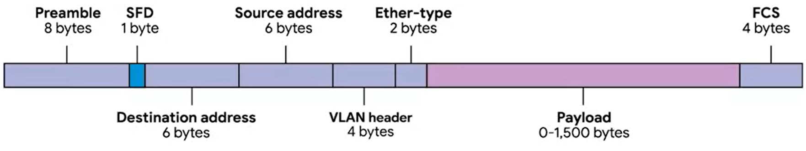

Ethernet frame - a highly structured collection of information presented in a specific order

Preambleis 8 bytes or 64 bits long and can itself be split into two sections.
The first seven bytes are a series of alternating ones and zeros.
These act partially as a buffer between frames and can also be used by the network interfaces to synchronize internal clocks they use, to regulate the speed at which they send data.
SFD (last byte in the preamble)or start frame delimiter. This signals to a receiving device that the preamble is over and that the actual frame contents will now follow.